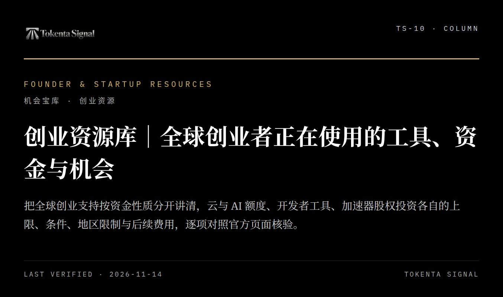
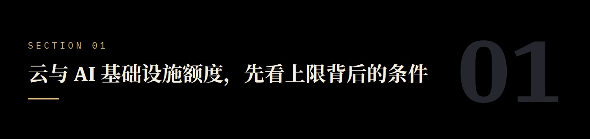
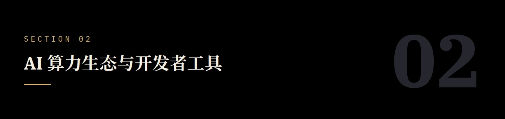
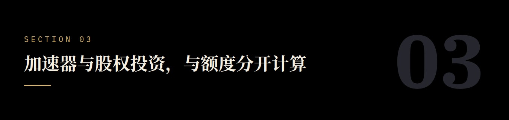
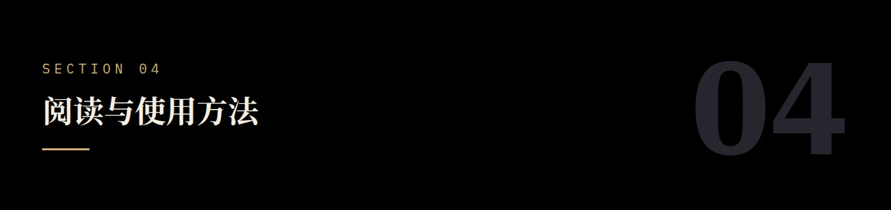

创业早期最先烧掉的钱，往往花在云服务器、AI 接口调用和团队协作工具上。全球大厂与投资机构为此设了大量扶持项目，公开宣传的金额看起来接近，资金性质却完全不同。额度只能抵扣指定平台的用量，到期作废，也不能提现。股权投资会给现金，同时会稀释创始团队的持股。无偿资助不要求股权，审核通常更慢，名额也更少。贷款则需要偿还，与资助是两回事。本栏目把这几类资源分开整理，避免读者把宣传上限当成到手金额。
本篇收录 9 个仍在运行的项目，全部对照官方页面核验过权益与条件。每张卡片写清提供机构、资源形式、可获得的权益、真实申请条件、是否需要企业实体、地区限制、是否要求股权、申请截止日期与后续费用。凡是官方页面写明最高可达的金额，卡片里都按上限口径表述，并注明拿到上限需要满足的条件。中国大陆团队的资格，官方没有明确写清的，一律标注待核验，不做推测性承诺。

四大云厂商的创业额度有一个共同结构，入门档门槛低，金额小，高档金额大，需要机构融资背景或合作伙伴推荐。微软、谷歌与 AWS 的额度都可以抵扣各自的 AI 服务用量，相当于同时解决了算力与模型接口的早期成本。Cloudflare 的额度集中在边缘网络与开发者平台，适合已经把产品部署在全球用户面前的团队。申请前先确认两件事，一是团队现有的技术栈是否真的会用这家云，二是额度有效期从批准日开始计算，产品还没有上线就申请，额度会在空转中过期。
地区问题需要单独说明。谷歌在官方说明中要求申请企业位于 Google Cloud 已正式商用且支持自助购买的地区，中国大陆不在这一范围内，大陆团队通常需要先有境外实体才能进入高档。AWS 与微软的全球账户体系与中国区运营体系相互独立，官方页面没有逐项列明大陆实体的处理方式，本篇标注待核验，申请前应先向项目方书面确认。
Microsoft for Startups
提供机构 Microsoft
资源形式 云与 AI 额度，无偿扶持，不要求股权
可获得的权益 Azure Startup credits 最高可达 150,000 美元，随产品进展与 Azure 持续用量分阶段解锁，完成企业核验后先解锁最高 5,000 美元。额度可抵扣 Azure 计算、存储、Azure OpenAI 与 Azure Machine Learning 等合规服务，并包含通过 Microsoft Marketplace 与联合销售触达企业客户的通道
申请条件 早期软件类初创企业，产品可为 AI 或云端应用，从想法与 MVP 阶段到规模化阶段均可申请。官方资格口径包括私营营利企业、自有软件产品、未到 C 轮以后阶段，此前领取的免费 Azure 额度未超过官方上限，教育机构、政府机构、咨询与代理类公司不在范围内
是否需要企业实体 需要，需为已设立的私营营利企业
地区限制 总部需位于 Azure 可用国家或地区。中国大陆的 Azure 由世纪互联运营，与全球 Azure 账户体系独立，大陆实体能否以全球账户申请，官方页面未明确，待核验
是否要求股权 否
申请截止日期 常年开放，无固定截止日期
是否存在后续费用 额度用完或到期后自动转为 Azure 按量付费标准定价，无项目服务费
150,000 美元为官方页面写明的分阶段解锁上限，并非批准即到账，2026-11-14 对照微软官方页面核验。
Google for Startups Cloud Program
提供机构 Google Cloud
资源形式 云与 AI 额度，无偿扶持，不要求股权
可获得的权益 分三档。Start 档最高 2,000 美元，有效期一年。Scale 档两年内最高 200,000 美元，第一年按用量全额抵扣最高 100,000 美元，第二年按用量的 20% 抵扣最高再增 100,000 美元。AI 优先的 Scale 档两年最高 350,000 美元，第一年最高 250,000 美元。额度可抵扣 Google Cloud 自有服务与 Gemini、Gemma 等 Google 模型，第三方模型单独计费不在抵扣范围内，另含 12 个月 Google Workspace Business Plus 等附加权益
申请条件 Start 档要求成立两年内、有可用的 MVP 与清晰商业模式、计划寻求风险融资且此前未领取过超出免费试用范围的 Google Cloud 额度。Scale 档要求成立五年内，已获得机构投资者的 Pre-Seed 至 A 轮股权融资，其中 Pre-Seed 与种子轮需在近五年内，A 轮需在近 12 个月内，且此前领取的 Google Cloud 额度不超过 5,000 美元。政府创新资助、奖金、众筹与亲友借款不计入 Scale 档的融资资格。已上市或被收购企业、教育与政府机构、非营利组织、开发外包与咨询代理类公司不受理
是否需要企业实体 需要，需有与公司域名一致的企业邮箱、公开可访问的公司网站与 Google Cloud 账单账号
地区限制 官方明确要求企业位于 Google Cloud 已正式商用且支持自助购买的地区。中国大陆不在该范围内，大陆团队直接申请高档的资格待核验，实践中通常需要境外实体
是否要求股权 否
申请截止日期 常年开放，无固定截止日期，官方称多数申请在 5 至 7 天内回复
是否存在后续费用 额度到期或用完后按 Google Cloud 标准价格付费，第三方模型与 Marketplace 第三方产品自始自费
金额与分档条件来自 Google Cloud 官方权益页面与资格页面，350,000 美元仅适用于以 Gemini 为核心产品的 AI 优先企业，2026-11-14 核验。
AWS Activate
提供机构 Amazon Web Services
资源形式 云与 AI 额度，无偿扶持，不要求股权
可获得的权益 Founders 档面向自筹资金团队，最高 5,000 美元，从 1,000 美元起步，部分入选者可追加至上限。Portfolio 档最高 200,000 美元，需持有合作机构提供的组织 ID。AI 初创企业在 Portfolio 之后还有邀请制的更高额度通道，官方表述为 200,000 美元以上。额度可抵扣 AWS 云服务与 Amazon Bedrock 等 AI 服务用量
申请条件 官方资格口径为 B 轮之前、成立 10 年内、AWS 账户处于付费层级，且此前未领取过 Activate 额度或本次申请金额高于此前已领金额。Founders 档可直接申请，Portfolio 档必须填写加速器、投资机构或天使投资人等 Activate Provider 的组织 ID，官方审核周期为 5 至 10 个工作日
是否需要企业实体 需要，需有公司网站与公司资料用于资格确认，并绑定 AWS 付费账户
地区限制 官方页面未按国家逐项列明。中国区 AWS 由光环新网与西云数据运营，与全球 AWS 账户体系独立，大陆实体使用全球账户申请的资格待核验
是否要求股权 否
申请截止日期 常年开放，无固定截止日期
是否存在后续费用 额度有有效期，过期或用完后按 AWS 标准价格付费，账户本身需保持付费层级并绑定付款方式
Portfolio 上限以 AWS 官方现行页面为准，官方现行页面写明最高 200,000 美元，部分第三方旧文仍写 100,000 美元，本篇不采用，2026-11-14 核验。
Cloudflare for Startups
提供机构 Cloudflare
资源形式 边缘云与开发者平台额度，无偿扶持，不要求股权
可获得的权益 三档额度，有效期一年。Tier 3 为 10,000 美元，无最低融资要求。Tier 2 为 100,000 美元，另含客户经理与专家技术 sessions。Tier 1 最高 350,000 美元，另含优先技术支持与每两周一次的解决方案架构师办公时间。额度抵扣 Workers、R2、D1、Vectorize、Pages 等按量服务，其中 R2 部分最高抵扣 10,000 美元，核心安全与网络功能在各档均免费包含
申请条件 成立 10 年内，融资阶段在 B 轮及以内且近 12 个月内有融资记录，正在开发技术产品，有公开可访问的网站，在 LinkedIn、X 或 GitHub 有公开账号，此前未获批进入过本项目，并使用与公司域名一致的企业邮箱。Tier 2 要求累计融资低于 500 万美元且投资方为 Cloudflare 关联合作伙伴，Tier 1 要求累计融资 500 万美元以上且投资方为关联合作伙伴
是否需要企业实体 需要，需为营利企业并提供公司域名邮箱
地区限制 官方资格清单未列国家排除项，中国大陆实体的付款方式与账户审核口径未明确，待核验
是否要求股权 否
申请截止日期 常年开放，无固定截止日期
是否存在后续费用 额度有效期一年，用完或到期后按 Cloudflare 标准价格付费
三档金额与条件来自 Cloudflare 官方项目现行页面，该页面已将上限更新至 350,000 美元，旧版 250,000 美元口径不再采用，2026-11-14 核验。

第二类资源金额不大，解决的问题很具体。NVIDIA Inception 提供的是生态成员资格，价值在培训、硬件与软件优选价格、合作伙伴云额度与投资人对接，官方没有公布固定额度金额，任何声称保证拿到某一数额 GPU 额度的说法都不可靠。GitHub 与 Notion 的扶持直接对应两项日常开支，代码托管与协作空间，金额写在官方页面上，条件也写得很细，适合团队在成立初期逐项对照申请。这类项目有一个共同点，全部要求申请人是新客户或未领取过同类优惠，已经在付费使用的团队多数无法补领。
还有一类容易被忽略的资源是企业技术试点机会。微软与 AWS 都为入选的初创企业开放了云市场与联合销售通道，产品上架后，企业客户可以直接用既有的云预算采购，采购流程比单独签约短得多。对做企业级产品的团队来说，这条通道的价值有时高于额度本身，它把第一批付费客户的获取成本降了下来。代价是上架前要过平台的产品与合规审核，安全与数据处理材料需要提前备齐。
NVIDIA Inception
提供机构 NVIDIA
资源形式 生态成员资格与服务优惠，无偿扶持，不要求股权，无固定现金或额度承诺
可获得的权益 免费自学技术课程与专家工作坊折扣，NVIDIA 硬件与软件的优选价格，合作伙伴提供的免费云额度机会，开发者论坛完整权限，月度成员通讯，以及通过 Inception VC Alliance 与 Capital Connect 对接投资机构的资格。官方未公布云额度的固定金额，具体优惠以成员门户内当期开放的项目为准
申请条件 面向 AI 初创企业，任何融资阶段均可申请，无营收要求。官方 FAQ 口径包括有可访问的公司网站、已正式注册成立、成立年限低于 10 年、有明确的 NVIDIA 技术使用场景、至少有一位创始人在实际运营。咨询与外包开发公司、加密货币相关公司、云服务商、经销商与上市公司不在受理范围内
是否需要企业实体 需要，申请时需填写公司成立日期，未注册成立的团队无法申请
地区限制 官方定位为全球项目，未公布国家排除清单，中国大陆已注册企业的审核口径未逐项说明，待核验
是否要求股权 否，官方明确无申请费、无会员费、无股权要求
申请截止日期 常年开放，无批次，无固定截止日期
是否存在后续费用 成员资格免费，优选价格购买硬件与软件时仍需按折后价付款，合作伙伴额度的后续费用按各合作伙伴条款执行
官方页面只写合作伙伴免费云额度机会，未写固定金额，本卡片不填入任何第三方流传的额度数字，2026-11-14 对照 NVIDIA 官方页面与 FAQ 核验。
GitHub for Startups
提供机构 GitHub
资源形式 开发者平台额度，无偿扶持，不要求股权
可获得的权益 最高 10,000 美元的 GitHub 平台额度，有效期最长 12 个月，自批准日起计算，用完或到期以先到者为准。额度抵扣 GitHub Enterprise Cloud 的许可费用与合规附加产品，包括 GitHub Copilot、GitHub Advanced Security 与其他按量产品，并含入驻辅导与专家办公时间
申请条件 必须同时满足三项，与 GitHub for Startups 合作伙伴有关联，合作伙伴包括投资机构、加速器与创业支持组织，已获得外部股权融资且阶段在 B 轮及以前，非股权类额度不计入外部融资，此前未使用过 GitHub Enterprise 方案，近六个月内未处于 Enterprise 方案中。同一家企业只能兑换一次，此前通过微软或本项目领取过 Enterprise 额度的不再符合资格。仅支持 GitHub.com 上的 Enterprise Cloud，不支持 Enterprise Server 与数据驻留型企业账户
是否需要企业实体 需要，需以企业身份持有 Enterprise 账户并绑定有效付款方式，官方条款提示入驻后数周内会产生一笔授权预扣款验证
地区限制 官方条款未列国家排除项，主要门槛为合作伙伴关联与外部融资，大陆团队经其投资机构或加速器为合作伙伴的路径申请，资格待核验
是否要求股权 否
申请截止日期 常年开放，通过合作伙伴申请，无固定截止日期
是否存在后续费用 额度用完或 12 个月到期后，仍在使用的产品自动转为标准付费计费并从绑定的付款方式扣款，官方明确要求申请人自行跟踪额度用量
现行方案为 10,000 美元额度制，早期 20 个 Enterprise 席位免费一年的旧方案官方已声明停用，本篇按现行口径写，2026-11-14 对照 GitHub 官方项目页面条款核验。
Notion for Startups
提供机构 Notion
资源形式 协作软件服务优惠，无偿扶持，不要求股权
可获得的权益 Business 方案免费使用，含 Notion AI 与每月 AI 额度，分三档。与 Notion 合作伙伴有关联的企业免费 6 个月，非合作伙伴企业免费 3 个月，员工少于 10 人的小微企业与服务类企业免费 1 个月。官方按 Business 方案每人每月 20 美元年付价计算，100 人企业对应的最高价值为 12,000 美元。另含 Notion Perks 软件折扣与一次免费的认证顾问配置咨询
申请条件 必须为未付费的新客户，此前未领取过 Notion 的同类促销，员工少于 100 人，使用企业工作邮箱申请，个人邮箱不受理。3 个月与 6 个月档面向做可规模化技术产品或服务的初创企业，6 个月档还需提供合作伙伴的推荐码。网站不活跃、公司信息不完整或无法核验初创资格的申请会被降到 1 个月档
是否需要企业实体 需要，需有公开公司网站与公司域名邮箱，个人申请会被判定为信息不足
地区限制 官方页面未设国家限制，中国大陆企业以公司域名邮箱申请的审核口径未单独说明，待核验
是否要求股权 否
申请截止日期 常年开放，无固定截止日期
是否存在后续费用 免费期结束后转为 Business 方案标准订阅价格，已付费过的老客户不能用本优惠追溯退款
三档时长与 12,000 美元最高价值口径来自 Notion 官方创业项目页面，2026-11-14 核验。

本节的两个项目与前文所有额度有本质区别。它们给的是现金投资，换取的是公司股权，入选后还需要团队投入三个月左右的时间参加项目，并按项目要求设立或调整公司注册地。判断这类机会不能只看金额，要算清稀释比例。Y Combinator 的标准条款把 500,000 美元拆成两部分，一部分固定换 7% 股权，另一部分按后续融资的最优条款转换，实际总稀释取决于下一轮的估值上限。a16z speedrun 的首笔 500,000 美元对应 10% 股权，比例高于 YC 的固定部分，换来的还有旧金山驻地期间的客户与人才网络。两家都不收项目费，这一点在鱼龙混杂的付费加速器市场里值得单独确认。
对中国大陆创始团队来说，这类项目的真正门槛在公司结构。YC 明确只投资美国、加拿大、开曼与新加坡注册的公司，在其他国家已注册的团队入选后需要做架构翻转，把母公司设到上述法域。speedrun 为 12 周旧金山线下驻地，官方表示会协助处理签证与银行事务，创始人能否成行仍取决于个人签证结果。把这些成本算进去，再决定是否申请。
Y Combinator
提供机构 Y Combinator
资源形式 股权投资，现金出资换取股权，与无偿资助和额度分开计算
可获得的权益 标准投资 500,000 美元，录取当天即承诺出资，不设里程碑条件。结构分两笔，125,000 美元按投后 SAFE 换取固定 7% 股权，375,000 美元按无上限最惠国 SAFE 出资，在下一轮定价融资时按期间发行的最低估值上限 SAFE 或更优条款转换，官方示例中下一轮投后估值上限为 1,500 万美元时该笔约转换 2.5%。另含 YC 的后续轮次按比例跟投权、创始人资源与校友网络，官方明确不收取任何项目费用
申请条件 按批次申请与面试录取，无行业与国籍限制，全球团队均可申请。公司注册地有硬性要求，只投资美国、加拿大、开曼与新加坡注册的公司，未注册的团队录取后由 YC 协助设立，已在其他国家注册的团队需做公司架构翻转，把母公司迁入上述法域，原公司转为子公司继续在当地运营
是否需要企业实体 需要，签约前必须完成在指定法域的公司设立或架构翻转
地区限制 创始人国籍与居住地不限，中国大陆团队可申请，限制在于公司注册地必须落在上述四个法域，大陆公司需翻转架构后才能签约收款
是否要求股权 是，固定 7% 加最惠国 SAFE 转换的增量股权，总稀释随下一轮估值上限浮动
申请截止日期 按每年多批次的官方申请窗口执行，具体日期以 YC 官网当期批次公告为准
是否存在后续费用 无项目费。后续成本为公司架构翻转与境外公司维护的法律与合规支出，由团队自行承担
投资结构与注册地要求全部来自 YC 官方标准条款页面，2026-11-14 核验。
a16z speedrun
提供机构 Andreessen Horowitz，a16z
资源形式 股权投资，现金出资换取股权，附带合作伙伴额度包，与无偿资助分开计算
可获得的权益 投资最高 1,000,000 美元，结构分两笔，首笔 500,000 美元按 SAFE 换取 10% 股权，目标两周内完成交割，另一笔最高 500,000 美元在 18 个月内投入公司的下一轮合格融资。另含来自 200 多家合作伙伴的 1,000 万美元以上云、AI 与软件额度包、客户对接与人才网络，官方明确不占董事会席位
申请条件 面向极早期团队，12 周线下驻地在旧金山 a16z 办公室进行，需创始人全程到场。录取率官方未公布，第三方统计低于 1%，竞争强度显著高于额度类项目。SR008 期优先申请窗口已于 2026 年 11 月 1 日截止，此后提交的申请按官方口径计入下一期评审
是否需要企业实体 需要，签约出资以已设立的公司主体为前提，具体注册地要求以当期条款为准，待核验
地区限制 项目为旧金山线下驻地，官方表示可协助创始人处理签证与银行事务。中国大陆创始人能否成行取决于个人赴美签证结果，项目方对大陆实体的单独口径未公开，待核验
是否要求股权 是，首笔 500,000 美元对应 10% 股权，第二笔按下一轮条款转换
申请截止日期 分期开放。SR008 优先窗口截止于 2026 年 11 月 1 日，当前申请计入下一期，日期以 speedrun 官网为准
是否存在后续费用 无项目费公开口径。驻地期间的差旅与旧金山生活成本由团队自行承担
投资结构与额度包来自 a16z speedrun 官方站点与 a16z 官方公告，SR008 窗口状态按 2026-11-14 的时间点标注为已截止，不写成仍可报名，2026-11-14 核验。

01 先按资金性质选项目。只需要抵扣云与工具账单的，先申请额度类，这类项目不稀释股权，审核以资格清单为准。需要现金且能接受股权稀释与境外公司结构的，再考虑加速器类，并把稀释比例与架构成本先算清。
02 额度类项目按产品上线节奏申请。多数额度的有效期从批准日开始计算，产品未上线前申请会白白消耗有效期。同一家厂商的历史额度领取记录会影响新申请，先查清团队与关联公司此前的领取情况。
03 申请材料保持一致。公司网站、企业域名邮箱、公司注册信息与融资文件四项，在各项目之间会被交叉核对，口径不一致是常见的驳回原因。
04 每张卡片都附了官方入口与核验日期。项目条款调整频繁，正式提交前再打开官方页面复核一次金额与条件，尤其是标注了待核验的地区资格，先向项目方书面确认再投入申请时间。
05 本栏目后续会持续更新同类项目。已截止的批次、已暂停的项目与已过期的优惠不会保留在清单里冒充可申请资源，发现条目状态变化可以在公众号后台留言提醒。

SOURCES · 来源与核验
[1] Microsoft for Startups 官方页面，额度上限与解锁方式
[2] Google for Startups Cloud Program 官方权益页面，分档金额与资格
[3] AWS Activate 官方页面，Founders 与 Portfolio 分档
[4] Cloudflare for Startups 官方页面，三档额度与资格清单
[5] NVIDIA Inception 官方页面，成员权益与申请说明
[6] GitHub for Startups 官方页面，额度条款与资格
[7] Notion for Startups 官方页面，三档免费时长与价值口径
[8] Y Combinator 官方标准条款页面，500,000 美元投资结构
[9] a16z speedrun 官方站点，投资与额度包说明
[10] a16z 官方公告，speedrun SR008 申请窗口与投资条款
LAST VERIFIED · 2026-11-14
TOKENTA SIGNAL
Extracting signals from the noise. 本栏目内容来自公开来源并标注核验日期，不构成任何投资建议。
signal.tokenta.space · team@tokenta.space